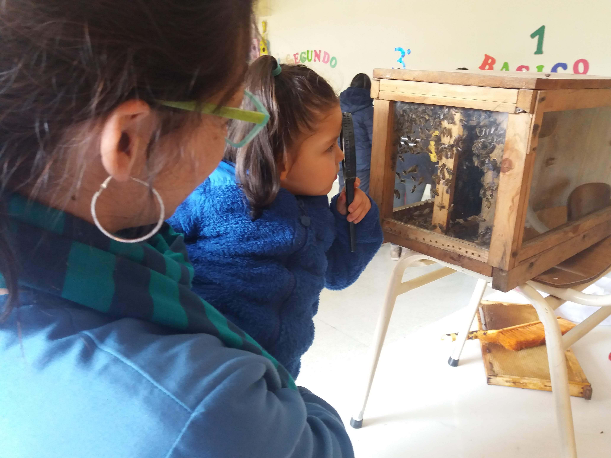
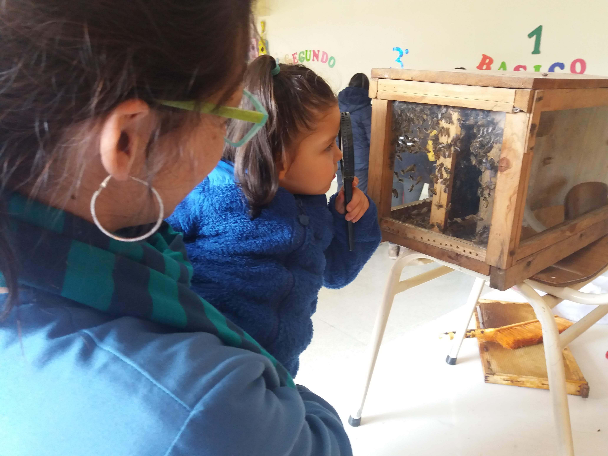

Esencias del Llaima
Sobre Nosotros
Somos un emprendimiento familiar, que busca a través de la práctica de la apicultura lograr una soberanía económica y de autoabastecimiento para nuestra alimentación y el cuidado de la salud, practicando una apicultura Agroecológica que respeta y pone en valor a los polinizadores nativos, buscando la regeneración de la biodiversidad del territorio.
Para ello ofrecemos productos que mezclan frutos silvestres y hierbas medicinales de la Araucanía Andina con materias primas extraídas desde nuestras colmenas de abejas (miel, polen, propoleos, jalea real, cera, etc.), ubicadas en Cunco región de la Araucanía a los pies del Volcán Llaima, creando productos que cuentan con una base científica sobre sus efectos terapéuticos.


Apiturismo

 
